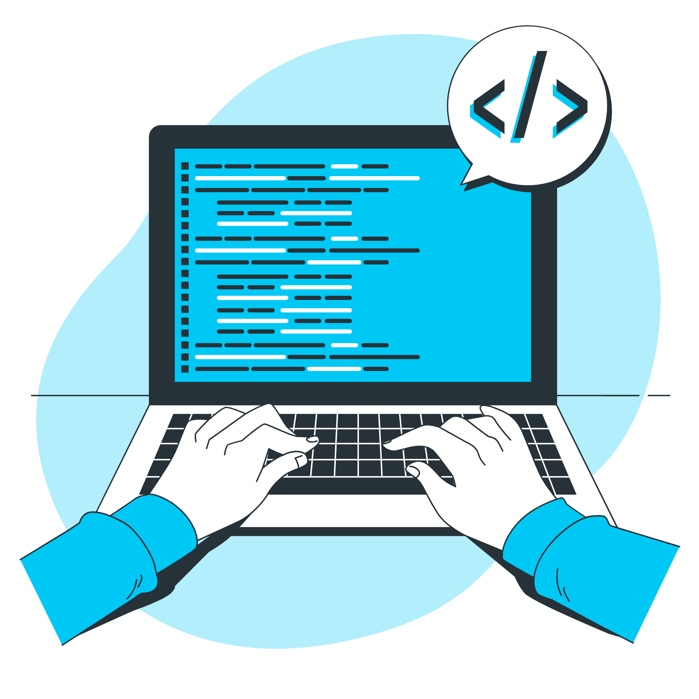

Hola
Soy Juan
Desarrollador
FullStack

Desde joven, siempre he sido un apasionado de la
tecnología y la informática. Al ingresar al
Cecyt 14, tomé la carrera de técnico en informática,
donde conocí la programación y rápidamente me enamoré
del desarrollo de software.
Estoy emocionado de continuar aprendiendo y creciendo
como programador, y por ello estoy en busca de
oportunidades para trabajar en proyectos desafiantes
y aprender de profesionales experimentados en el campo.
Descripcion del proyecto
Descripcion del proyecto